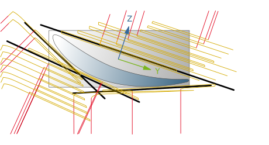
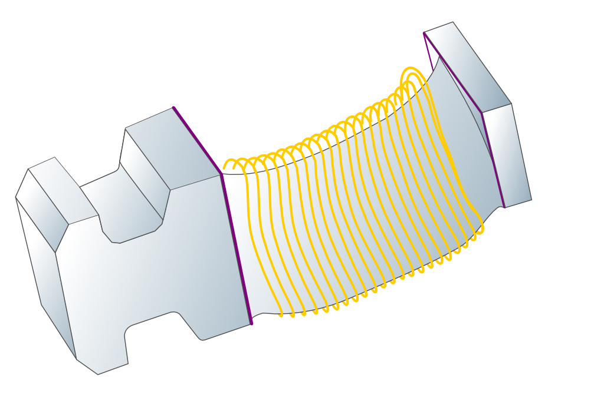
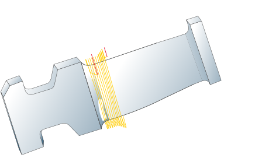
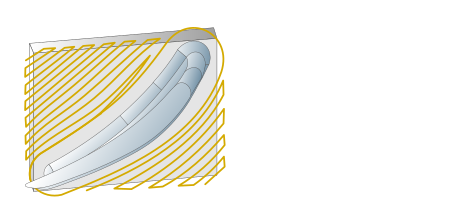

Overview of cycles
3D Roughing
Optimized pre-roughing of turbine blades.
A pocket strategy, in which a level is machined from the outside in, reduces the number of retractions and guarantees that the shortest possible toolpath is generated every time. At the same time, the new 3+2D Automatic mode provides automatic calculation of the orientation. This means that time-consuming manual frame optimization can be skipped.
|  |
Top Milling
Top milling refers to continuously circulating finishing with freely specifiable stock allowance for the blade and side surfaces.
|  |
Point Milling
Milling strategy with a fixed tilt angle of the tool to the X axis (4+1), to be used preferably for milling the transition between the blade and platform surfaces (including rolling ball function). The strategy can, however, also be used for machining the entire blade.
Machining can occur towards the platform or away from it. Depending on the tilt angle of the tool and the material to be removed, the spindle orientation can also be adjusted.
|  |
Platform machining
This new cycle makes complete machining of the platform possible, even for non-rollable geometries. The requirement for this is that the platform surfaces are either rotation surfaces, regular surfaces or planes.
|  |
Swarf Cutting
5-axis milling strategy to be used preferably for machining the platform if the platform can be milled accurately enough with the specified shape tolerance with an axial infeed. Milling the transition between the blade and platform surfaces can occur in conjunction with milling the platform in this operation (incl. rolling ball function). Compared to point milling, however, this generates more movement of the machine axes. An axial multiple infeed is also possible.
 |
Tangent Milling
Continuously circulating finishing with a barrel tool. Compared to Top Milling with bullnose end mills, the large barrel radius of the cutting edge makes it possible to work with a large lateral infeed even with highly curved turbine blades. In addition, it is possible to achieve a similar surface quality on the suction side (convex) and the pressure side (concave).